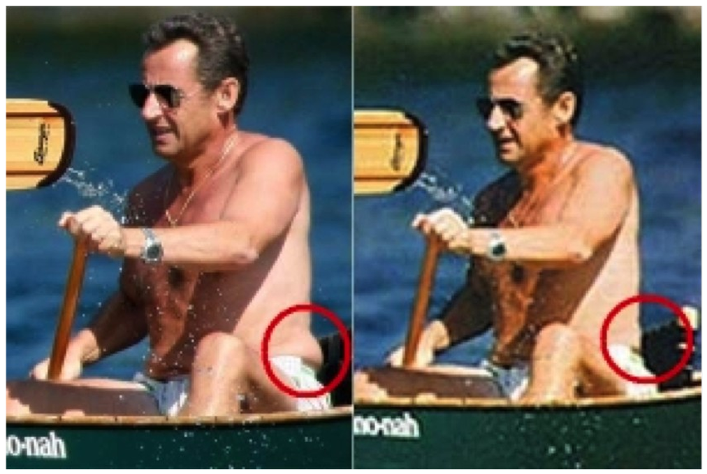
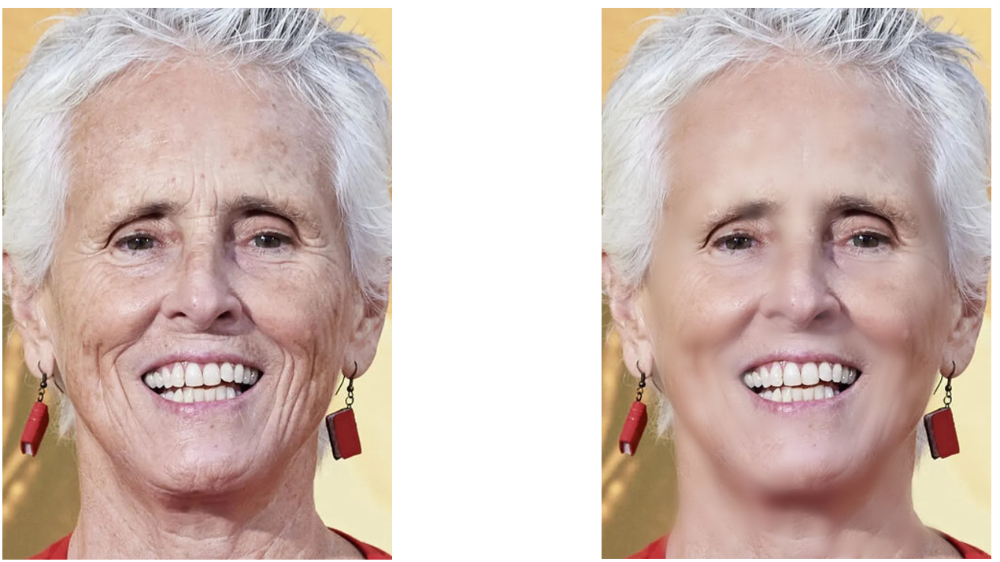
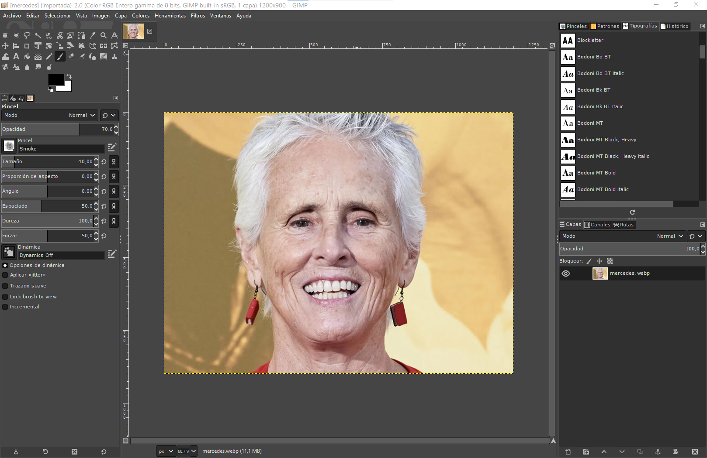
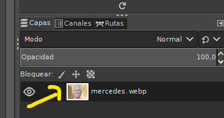
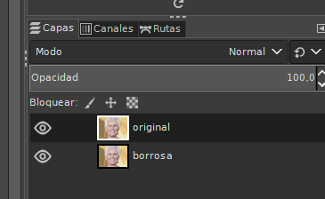
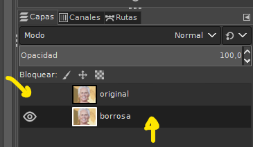
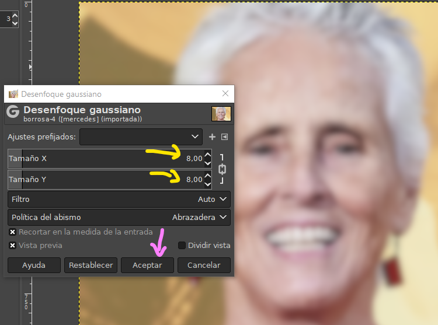
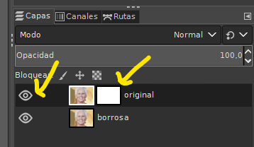
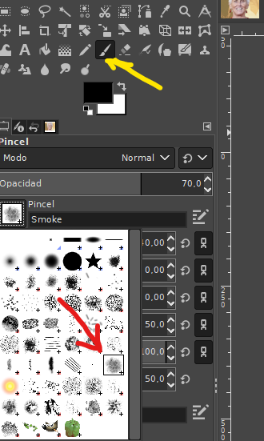
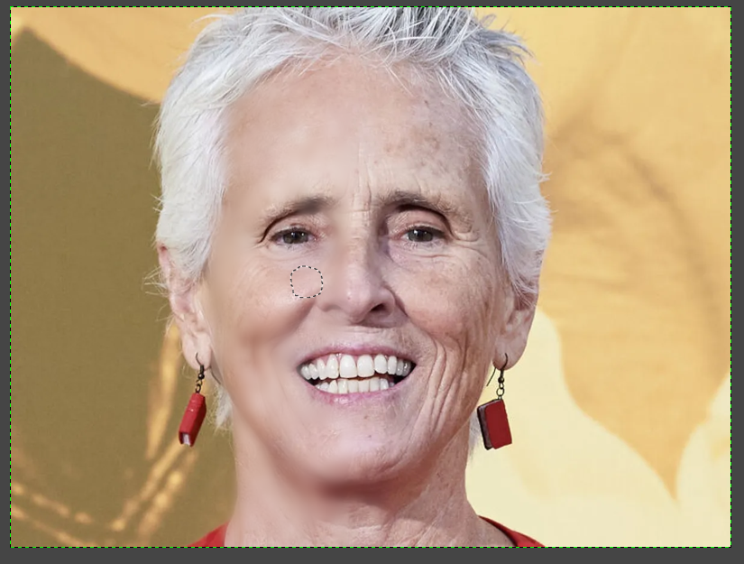

Retoques fotográficos¶
Retoques fotográficos¶
Desde los inicios de la fotografía, la figura humana ha sido uno de los temas más habituales. Siempre ha existido interés por mejorar el aspecto de las personas en las imágenes, pero con la llegada de la fotografía digital este proceso se ha vuelto mucho más sencillo y accesible.
Hoy en día estamos acostumbrados a ver fotografías retocadas en los medios de comunicación, especialmente de personas famosas. Estos retoques se utilizan para corregir imperfecciones, mejorar la iluminación o resaltar determinados rasgos. También en el ámbito de la política se emplea el retoque fotográfico para proyectar una imagen cuidada y profesional de los líderes públicos.
En este bloque aprenderemos a utilizar herramientas básicas de edición para mejorar fotografías de forma responsable, entendiendo tanto su utilidad como su impacto.

Actividad
📝 AA5.5 Alisado¶
(C.ESP2 / CE2.3 / IC1-3p)
El objetivo de esta práctica es aprender a suavizar las imperfecciones de la piel como arrugas o manchas por medio de la técnica del desenfoque blando

-
Buscar recursos
Busca en Internet y descarga una foto en que salga centrada y en primer plano la cara de un personaje conocido que tenga arrugas acentuadas.
-
Abrir la imagen
Abre el programa y desde el programa abre la imagen que has descargado usando el menú Archivo > Abrir. Busca en tu ordenador la imagen, selecciónala y pulsa en Abrir.

Abrir imagen -
Duplicar capa
Ahora necesitamos duplicar la capa en la que está la imagen. Sobre la capa de la imagen pulsamos con el botón derecho del ratón y seleccionamos Duplicar la capa:

Duplicasr -
Renombrar capas
Una vez que tengamos las dos capas, las vamos a renombrar. Para ello puedes hacer doble clic sobre el nombre de la capa. A la de arriba la llamaremos original y a la de abajo la llamaremos borrosa:

Renombrar -
Ocultar capa
Ahora vamos a ocultar la capa original (pulsando sobre el ojo) y seleccionar la capa borrosa:

Ocultar capa -
Desenfocar capa
Seguidamente necesitamos desenfocar la capa borrosa. Pulsamos una vez sobre la capa borrosa y abrimos Filtros > Difuminar > Desenfoque gaussiano. Y en la ventana que sale ponemos un tamaño de 8 en las dos cajas, para aplicar el desenfoque (ten en cuenta que dependiendo de la imagen que hayamos elegido, el tamaño de desenfoque será mayor o menor), y pulsamos en Aceptar.

Desenfocar capa -
Máscara de capa
Ahora vamos a hacer varias cosas. Primero volvemos a poner visible la capa original. Luego pulsamos con el botón derecho del ratón sobre la capa original y clicamos en Añadir máscara de capa (en la ventana que sale, directamente pulsamos en Aceptar).

Máscara de capa -
Seleccionar pincel
En la capa original, de los dos cuadrados pinchamos sobre el de la derecha (el blanco). Ahora seleccionamos la herramienta Pincel y seleccionamos el pincel llamado Smoke (el que está a la izquierda del sol).

Seleccionar pincel -
Configurar pincel
Modificamos la caja Tamaño hasta tener un tamaño que nos venga bien (en mi caso entre 50 y 60) y una dureza media (de entre 40 y 50). Y ahora sólo tendremos que ir pasando el pincel por aquellos sitios que tengan más arrugas y verás cómo se van alisando (compara la parte izquierda y la parte derecha de esta imagen). Lo que realmente está haciendo esta técnica es ir borrando suavemente la capa que está arriba, de manera que aparece la misma parte de la imagen de abajo -que está desenfocada-. Para obtener un resultado aceptable debes jugar con dos elementos: el desenfoque de la imagen de abajo, y la dureza del pincel con el que estás borrando la de arriba.

Configurar pincel Debes tener en cuenta que para acceder a sitios de la cara más escondidos debes reducir el tamaño del pincel, o el resultado no será realista.
-
Exportar resultado
Cuando hayas terminado exporta la imagen como .jpg.
-
Cerrar el programa.
ACTIVIDAD
- Debes hacer este mismo proceso para dos imágenes de personajes conocidos o desconocidos que consideres.
- Al finalizar el trabajo debes tener 4 imágenes: las 2 originales que has elegido y las dos que son el resultado de tu trabajo.
- Sube captura de pantalla del antes y después de las imágenes a Aules.
Actividad Refuerzo
🔨 AAR5.6 La figura humana¶
(C.ESP2 / CE2.3 / IC1-3p)
-
La figura humana I
Las prácticas de este apartado con la dedicada a quitar las arrugas de un rostro. Puedes ayudarte del siguiente vídeo
- Abre la fotografía quitar_arrugas.jpg.
2.Duplicamos la capa Fondo. - Herramienta de saneado (la tirita).
- Seleccionamos el pincel Circle Fuzzy (es un pincel blando), Escala de 1,00.
- Manteniendo apretada la tecla CONTROL del teclado, hacemos clic en una zona limpia de arrugas, pero cerca de una de ellas.
- Soltamos la tecla CONTROL, y vamos haciendo varios clics encima de la arrugas y ojeras de un ojo.
- Repetimos la operación en todas las zonas con arrugas de la cara (el otro ojo, frente, boca, cuello), hasta que esté "limpia" de arrugas.
- Si es necesario, bajamos la escala del pincel para quitar las arrugas de las zonas más pequeñas.
- Si no queremos que desaparezcan del todo las arrugas, y dejar la cara más natural (con ligeras arrugas de expresión), bajamos la opacidad de la capa Copia hasta conseguir el efecto deseado.
- Combinamos las capas visibles.
- Guardamos proyecto.
- Exportamos resultado en pdf.
- Abre la fotografía quitar_arrugas.jpg.
-
La figura humana II
Seguimos mejorando el retrato de la práctica anterior. Ahora vamos a cambiar el color de los ojos. Puedes ayudarte del siguiente vídeo
- Abrimos la imagen corregida de "quitar_arrugas_corregida.jpg" obtenida en la práctica anterior.
- Creamos una capa nueva, transparencia.
- Herramienta de selección elíptica.
- Hacemos clic en un ojo, y arrastramos el ratón hasta cubrir una pupila.
- Para realizar un ajuste perfecto, podemos estirar de los cuadrados de las esquinas hasta encajar la selección a la pupila del ojo.
- Hacemos clic en Añadir a la selección.
- Repetimos los pasos anteriores en el otro ojo.
- Seleccionamos el color frontal que queramos para cambiar el color de los ojos (por ejemplo, un verde o un azul).
- Herramienta bote de pintura.
- Hacemos clic dentro de la selección de la pupila.
- Modo de fusión Solapar.
- Quitamos la selección.
- Bajamos la opacidad de la capa nueva.
- Combinamos las capas.
- Guardamos como.
-
La figura humana III
Vamos a quitar de golpe todas las manchas e imperfecciones de la piel de nuestro retrato (tratamiento de lifting digital). Puedes ayudarte del siguiente vídeo
- Abrimos la imagen del cambio de color de ojos de la práctica anterior.
- Duplicamos la capa.
- Desmarcamos el ojo de la capa Fondo.
- Seleccionamos la herramienta de goma de borrar, pincel Circle Fuzzy, escala de 4.
- Borramos todo lo que no sea la piel de la modelo (fondo, pelo).
- Reducimos la escala del pincel para borrar bien los bordes.
- Reducimos más la escala y borramos las cejas, ojos, boca y las zonas con un cambio de color en la piel de la modelo.
- Filtros > Desenfoque > Desenfoque gaussiano.
- Aplicamos un Radio de desenfoque de 5 (tanto en Horizontal como en Vertical). Aceptar.
- Hacemos visible la capa Fondo (marcamos su ojo).
- Combinamos las capas.
- Guardamos como.
-
La figura humana IV
Para finalizar, vamos a aplicar un maquillaje a la fotografía de un retrato digital. Puedes ayudarte del siguiente vídeo
- Abrimos la imagen anterior del lifting digital.
- Creamos una capa nueva transparente.
- Herramienta pincel, Circle fuzzy, escala 1.
- Elegimos un color de frente (por ejemplo, rosa, azul, verde...)
- Pintamos encima de los dos ojos.
- Si nos salimos, borramos con la goma de borrar.
- Modo de fusión solapar.
- Bajamos la opacidad de la capa.
- Creamos otra capa transparente.
- Volvemos a seleccionar el pincel, y pintamos las mejillas de "colorete".
- Modo de fusión solapar, y bajamos la opacidad a gusto.
- Seleccionamos un color frontal rojo.
- Reducimos la escala del pincel.
- Creamos otra capa transparente.
- Pintamos los labios.
- Borramos si nos salimos del contorno de los labios.
- Modo de fusión solapar, bajamos la opacidad de la capa.
- Guardamos la imagen en formato .xcf, de esa manera se guardan todas las capas y, si en un futuro queremos modificar el color de una de las capas, la tenemos disponible y no tenemos que empezar todo desde el principio. Después, podemos combinar las capas visibles y guardar la imagen en formato .jpg, para poder visionarla en nuestro ordenador sin necesidad de abrir el GIMP.
- Enviamos la imagen.
-
La figura humana IV Realiza el proceso anterior con la foto Belén.jpg.
{kind=link}
{kind=link}
Referencias¶
- Guía Gimp 2.10